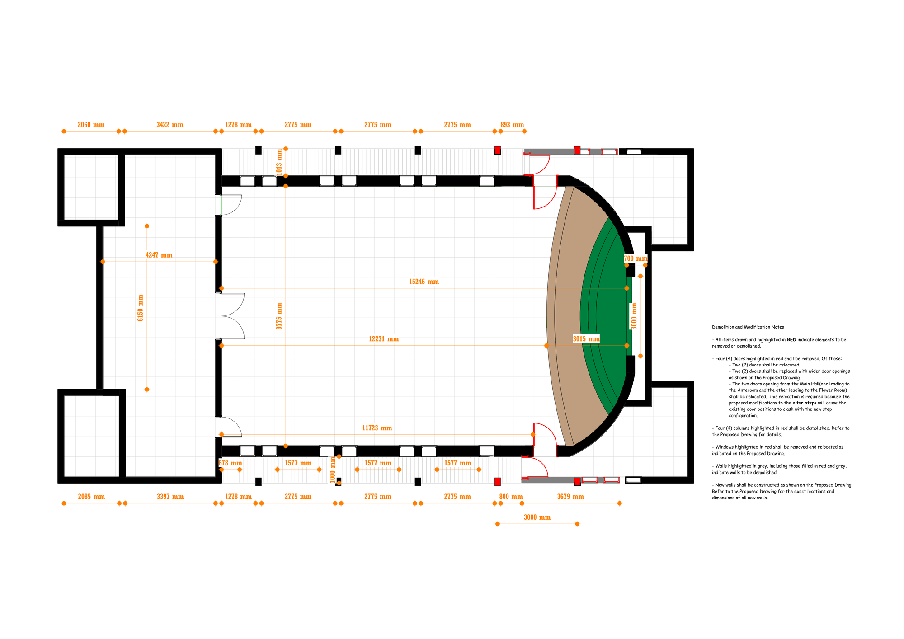
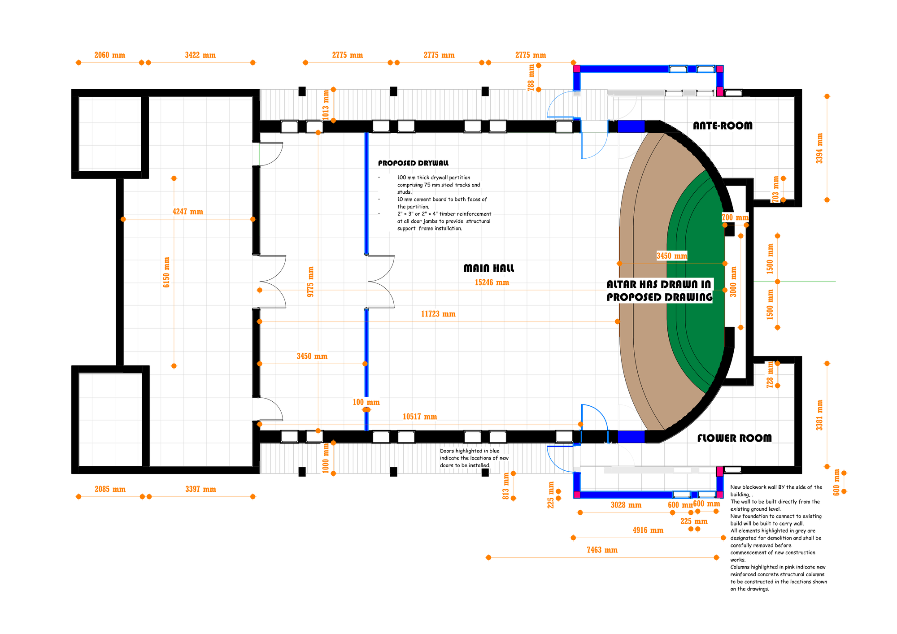
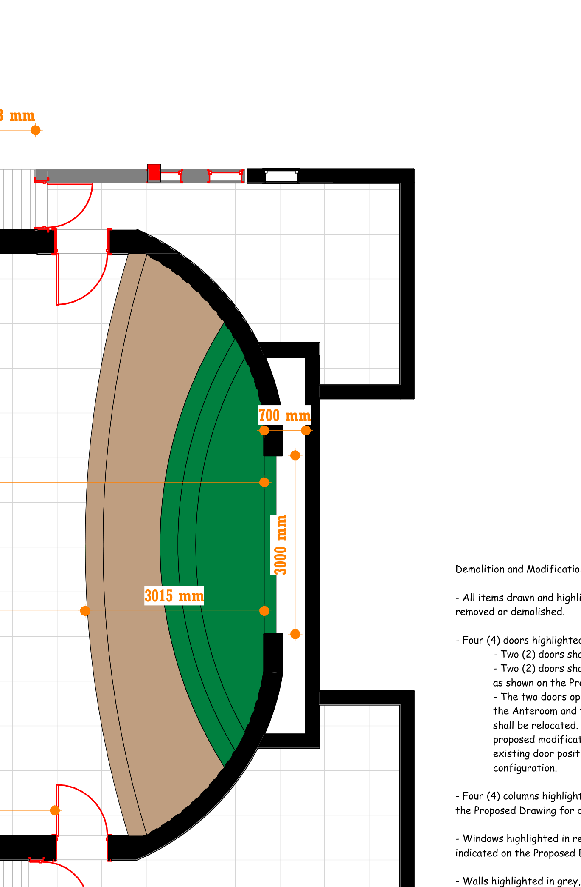
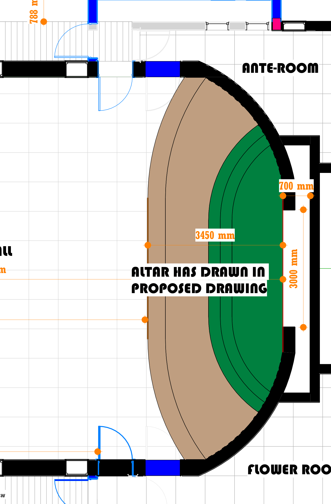
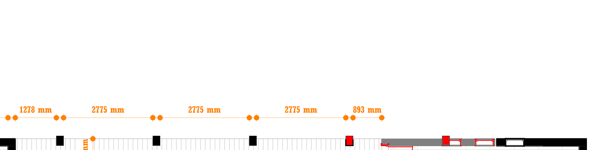
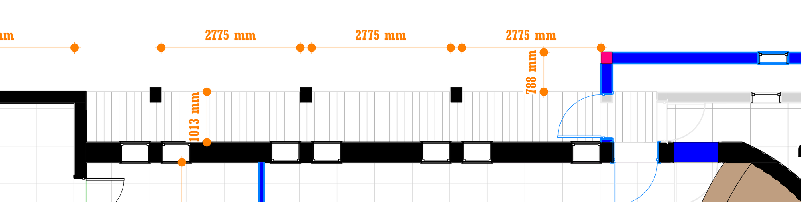
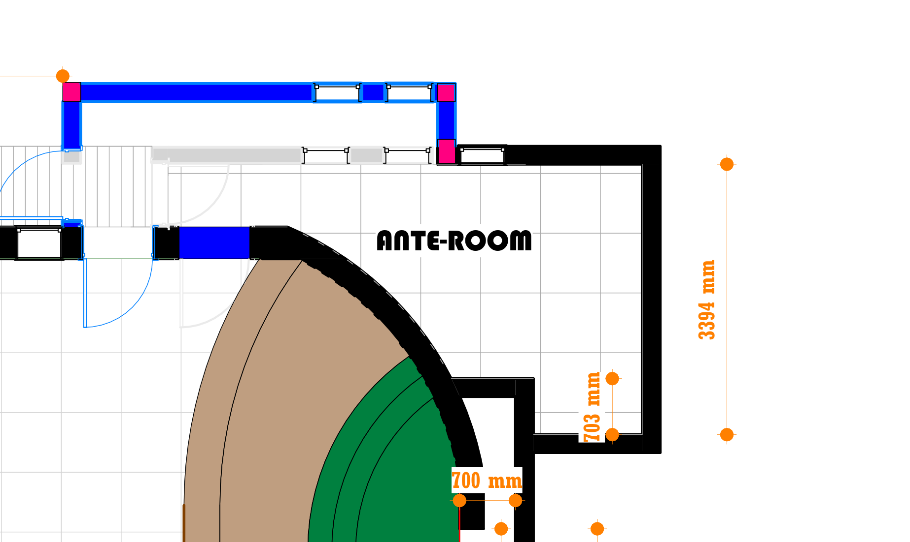
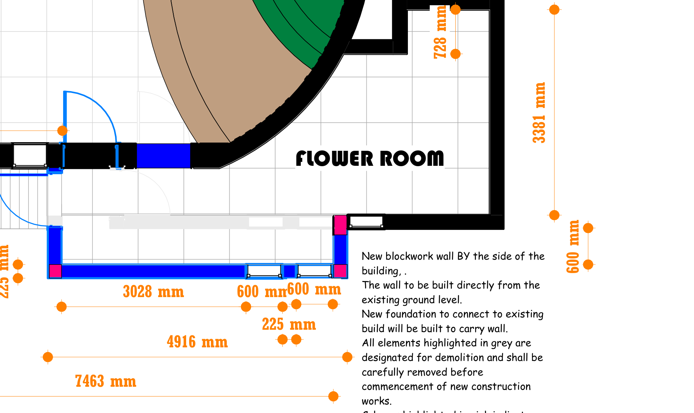
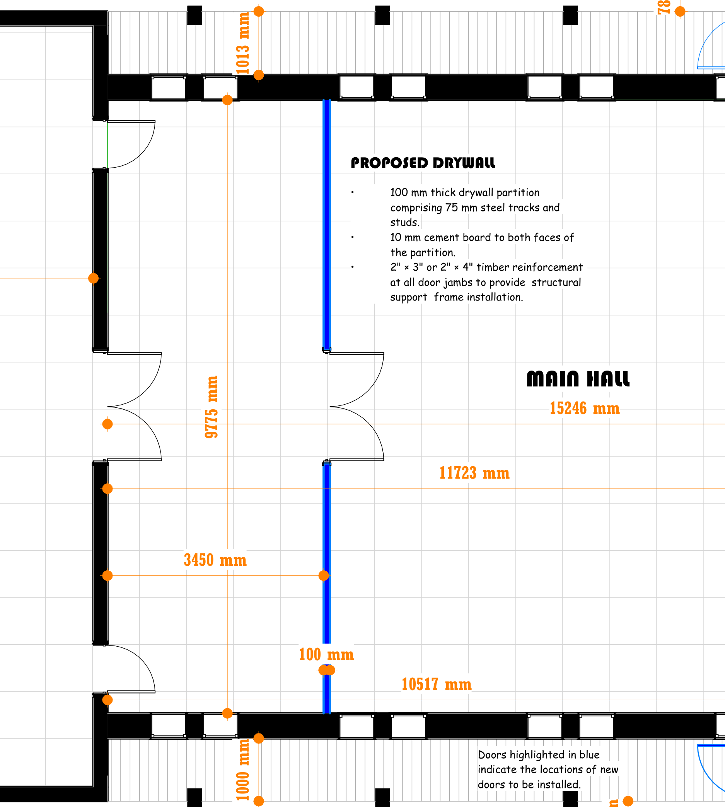

This report translates the Proposed Drawing against the As-Built Drawing for the Hall of Worship, Osogbo, and sets out the resulting scope of work. It is limited to what the two drawings show — the building as surveyed, and the building as proposed — and does not cover cost, methodology or safety, which are addressed elsewhere (cost: report RPT-2026-OSG-001). Its purpose is to give a plain, illustrated account of what changes and what must be built.
Both drawings are reproduced below at full size for reference. Every other figure in this report is a cropped extract from one of these two sheets.




The altar chord widens from approximately 3.00–3.015 m to 3.45 m, an increase of roughly 450 mm. The radial depth to the Ante-Room-side corridor (3000 mm) is unchanged. The curve shown is diagrammatic; exact setting-out is a working-drawing item.


Four doors are affected in total: two altar-side doors relocate approximately 0.9 m toward the Lobby wall (into a former window bay, since the widened altar would otherwise clash with their existing position), and two doors at the Ante-Room / Flower Room corridor entrances are replaced with wider openings in the new extended wall. Eight windows are affected in total — one absorbed into each relocated altar-side door, and the remainder lost to, and reconstructed within, the two extended walls.


Both rooms are minimal, undimensioned corner spaces on the As-Built drawing. The Proposed Drawing extends each outward — Ante-Room to a depth of 3394 mm, Flower Room to 3381 mm — on a new wall built from ground level and tied into a new foundation, per the drawing's own construction note.
Four existing columns, embedded in the perimeter wall flanking the altar, are demolished — their positions are superseded by the widened apse and extended side walls. Four new reinforced concrete columns are built at the outer corners of the two extensions (pink markings on the Proposed Drawing).

No partition exists on site today; the Fore Hall and Main Hall currently read as one undivided volume. The Proposed Drawing calls for a new partition, per its own note: 100 mm thick, 75 mm steel track and stud, 10 mm cement board both faces, with 2″×3″ or 2″×4″ timber reinforcement at door jambs.
| Item | Existing | Proposed | Work Required |
|---|---|---|---|
| Altar | 3.00–3.015 m chord | 3.45 m chord | Demolish and reconstruct altar and steps to widened chord |
| Altar-side doors (2) | Fixed against altar apse | Relocated ~0.9 m toward Lobby | Brick up existing opening; form new opening |
| Corridor doors (2) | Standard width, original wall line | Wider opening, extended wall | Demolish and rebuild wider in new wall |
| Partition doors (2, new) | Not applicable | Within new drywall partition | Form new openings during partition build |
| Windows (8 total) | Original bays, several in demolition zones | Removed / reconstructed in new wall lines | Remove and reconstruct per new wall positions |
| Ante-Room | Minimal corner, undimensioned | Extended ~703 mm, 3394 mm deep | New foundation, wall, column, roof tie-in |
| Flower Room | Minimal corner, undimensioned | Extended ~728 mm, 3381 mm deep | New foundation, wall, column, roof tie-in |
| Existing columns (4) | Embedded, roof-bearing | Demolished | Temporary support, then demolish |
| New columns (4) | Not applicable | RC columns at extension corners | Cast on new pad footings |
| Fore Hall / Main Hall partition | Does not exist | 100 mm drywall partition | Build per drawing specification |
This comparison is based solely on the As-Built and Proposed drawings. Before construction, the altar geometry, extension setting-out and partition detail should be developed into a full Construction Working Drawing Package with confirmed dimensions, levels and reinforcement.